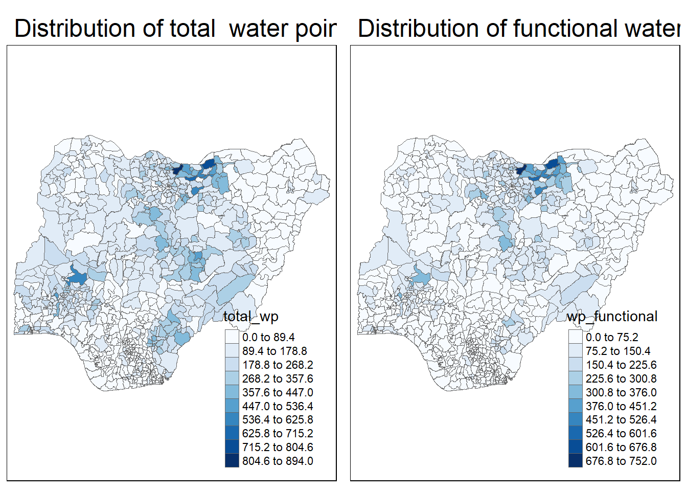

pacman::p_load(tmap, tidyverse, sf)Hands-on_Ex08B
Analytical Mapping
This document is about ploting analytical maps with the following steps:
Importing geospatial data in rds format into R environment.
Creating cartographic quality choropleth maps by using appropriate tmap functions.
Creating rate map
Creating percentile map
Creating boxmap
Load Library and Data
NGA_wp <- read_rds("data/rds/NGA_wp.rds")Basic Choropleth Mapping
p1 <- tm_shape(NGA_wp) +
tm_fill("wp_functional",
n = 10,
style = "equal",
palette = "Blues") +
tm_borders(lwd = 0.1,
alpha = 1) +
tm_layout(main.title = "Distribution of functional water point by LGAs",
legend.outside = FALSE)
p2 <- tm_shape(NGA_wp) +
tm_fill("total_wp",
n = 10,
style = "equal",
palette = "Blues") +
tm_borders(lwd = 0.1,
alpha = 1) +
tm_layout(main.title = "Distribution of total water point by LGAs",
legend.outside = FALSE)
tmap_arrange(p2, p1, nrow = 1)
Deriving Proportion of Functional Water Points and Non-Functional Water Points
We will tabulate the proportion of functional water points and the proportion of non-functional water points in each LGA. In the following code chunk, mutate() from dplyr package is used to derive two fields, namely pct_functional and pct_nonfunctional.
NGA_wp <- NGA_wp %>%
mutate(pct_functional = wp_functional/total_wp) %>%
mutate(pct_nonfunctional = wp_nonfunctional/total_wp)map of rate
tm_shape(NGA_wp) +
tm_fill("pct_functional",
n = 10,
style = "equal",
palette = "Blues",
legend.hist = TRUE) +
tm_borders(lwd = 0.1,
alpha = 1) +
tm_layout(main.title = "Rate map of functional water point by LGAs",
legend.outside = TRUE)
Percentile Map
The percentile map is a special type of quantile map with six specific categories: 0-1%,1-10%, 10-50%,50-90%,90-99%, and 99-100%. The corresponding breakpoints can be derived by means of the base R quantile command, passing an explicit vector of cumulative probabilities as c(0,.01,.1,.5,.9,.99,1). Note that the begin and endpoint need to be included.
It’s important to have 0 and 1 at the two ends.
We need to drop the drometry
Data Preparation
Step 1: Exclude records with NA by using the code chunk below.
NGA_wp <- NGA_wp %>% drop_na()Step 2: Creating customised classification and extracting values
percent <- c(0,.01,.1,.5,.9,.99,1)
var <- NGA_wp["pct_functional"] %>%
st_set_geometry(NULL) #this is to drop away the column geometry
quantile(var[,1], percent) 0% 1% 10% 50% 90% 99% 100%
0.0000000 0.0000000 0.2169811 0.4791667 0.8611111 1.0000000 1.0000000 Creating the get.var function
Firstly, we will write an R function as shown below to extract a variable (i.e. wp_nonfunctional) as a vector out of an sf data.frame.
- arguments:
- vname: variable name (as character, in quotes)
- df: name of sf data frame
- returns:
- v: vector with values (without a column name)
get.var <- function(vname,df) {
v <- df[vname] %>%
st_set_geometry(NULL) #this is similar to drop the geometry column
v <- unname(v[,1])
return(v)
}A percentile mapping function
Next, we will write a percentile mapping function by using the code chunk below.
#here we write another funciton and later we will reuse it
percentmap <- function(vnam, df, legtitle=NA, mtitle="Percentile Map"){
percent <- c(0,.01,.1,.5,.9,.99,1) #define percent cutting
var <- get.var(vnam, df) #run the funtion to create variable
bperc <- quantile(var, percent) #this is the quantile created
tm_shape(df) +
tm_polygons() +
tm_shape(df) +
tm_fill(vnam, #input parameter
title=legtitle,
breaks=bperc, #the pair we created using function earlier
palette="Blues",
labels=c("< 1%", "1% - 10%", "10% - 50%", "50% - 90%", "90% - 99%", "> 99%")) +
tm_borders() +
tm_layout(main.title = mtitle,
title.position = c("right","bottom"))
} percentmap("total_wp", NGA_wp)
Box map
First, this is hoow it looks like when we plot normal boxplot:
ggplot(data = NGA_wp,
aes(x = "",
y = wp_nonfunctional)) +
geom_boxplot()
Creating the boxbreaks function
The code chunk below is an R function that creating break points for a box map.
arguments:
v: vector with observations
mult: multiplier for IQR (default 1.5)
returns:
- bb: vector with 7 break points compute quartile and fences
boxbreaks <- function(v,mult=1.5) {
qv <- unname(quantile(v)) #get the quatile value
iqr <- qv[4] - qv[2] #calclating inter quantile range
upfence <- qv[4] + mult * iqr
lofence <- qv[2] - mult * iqr
# initialize break points vector
bb <- vector(mode="numeric",length=7)
# logic for lower and upper fences
if (lofence < qv[1]) { # no lower outliers
bb[1] <- lofence
bb[2] <- floor(qv[1])
} else {
bb[2] <- lofence
bb[1] <- qv[1]
}
if (upfence > qv[5]) { # no upper outliers
bb[7] <- upfence
bb[6] <- ceiling(qv[5])
} else {
bb[6] <- upfence
bb[7] <- qv[5]
}
bb[3:5] <- qv[2:4]
return(bb)
}Creating the get.var function
The code chunk below is an R function to extract a variable as a vector out of an sf data frame.
arguments:
vname: variable name (as character, in quotes)
df: name of sf data frame
returns:
- v: vector with values (without a column name)
get.var <- function(vname,df) {
v <- df[vname] %>% st_set_geometry(NULL)
v <- unname(v[,1])
return(v)
}Test and use the function
var <- get.var("wp_nonfunctional", NGA_wp)
boxbreaks(var)[1] -56.5 0.0 14.0 34.0 61.0 131.5 278.0Boxmap function
The code chunk below is an R function to create a box map. - arguments: - vnam: variable name (as character, in quotes) - df: simple features polygon layer - legtitle: legend title - mtitle: map title - mult: multiplier for IQR - returns: - a tmap-element (plots a map)
boxmap <- function(vnam, df,
legtitle=NA,
mtitle="Box Map",
mult=1.5){
var <- get.var(vnam,df)
bb <- boxbreaks(var)
tm_shape(df) +
tm_polygons() +
tm_shape(df) +
tm_fill(vnam,title=legtitle,
breaks=bb,
palette="Blues",
labels = c("lower outlier",
"< 25%",
"25% - 50%",
"50% - 75%",
"> 75%",
"upper outlier")) +
tm_borders() +
tm_layout(main.title = mtitle,
title.position = c("left",
"top"))
} tmap_mode("plot")tmap mode set to plotting boxmap("wp_nonfunctional", NGA_wp)Warning: Breaks contains positive and negative values. Better is to use
diverging scale instead, or set auto.palette.mapping to FALSE.